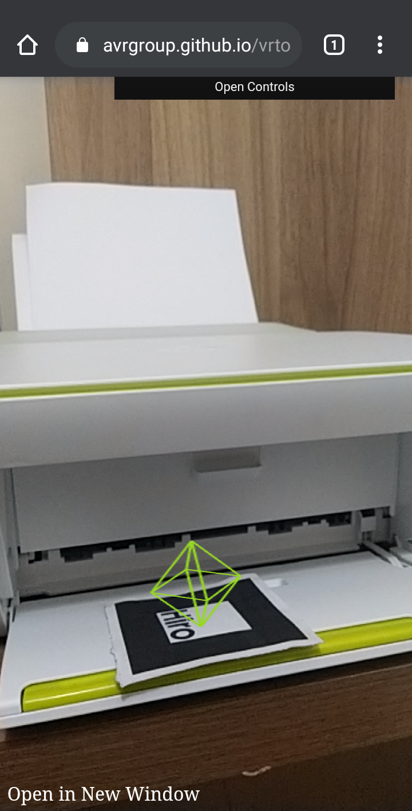
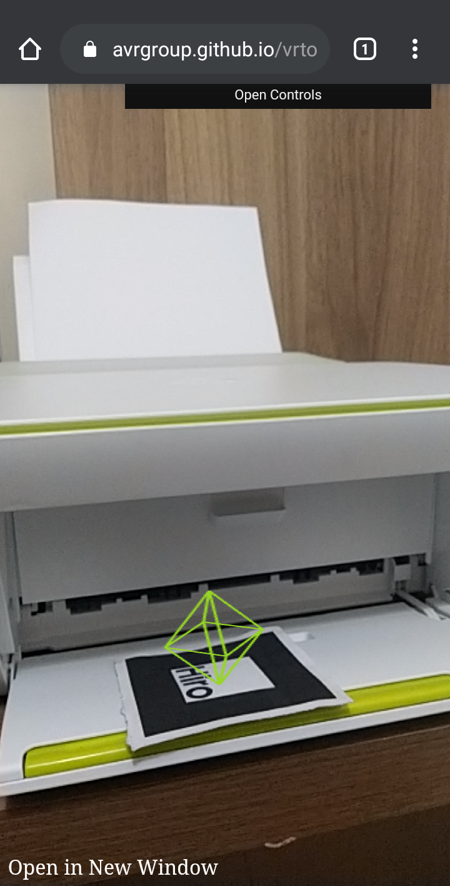

Platonics solids
Platonic solids, also called regular solids or regular polyhedra, are convex polyhedrons with identical faces composed of convex regular polygons. Euclid (ancient Greek mathematician) proved that there are five of such solids: the cube, dodecahedron, icosahedron, octahedron, and tetrahedron.
The name of Platonic solids was given due the Athenian philosopher Plato, who in his dialogue Timaeus related four of the regular polyhedra with the four basic elements (fire, air, water, and earth), which were believed to compose all the matter through their combinations, and the fifth polyhedron was associated heaven and the constellations. The tetrahedron was assigned to fire, the cube to earth, the octahedron to air, the icosahedron to water, and the dodecahedron to heaven and constellations.
More modes
Images in Augmented Reality
 
